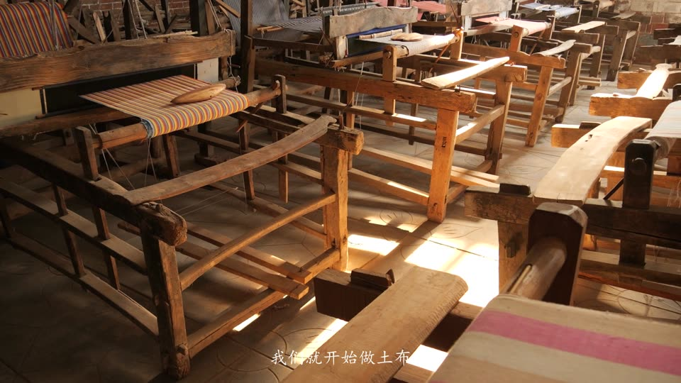
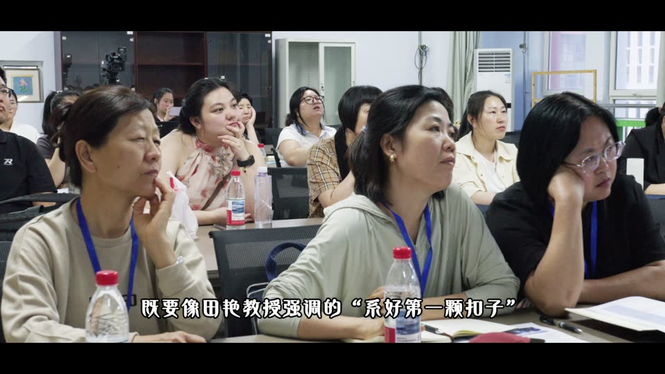
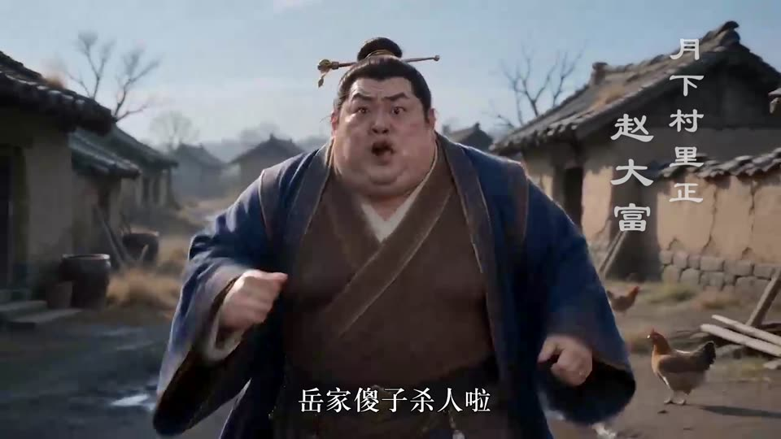
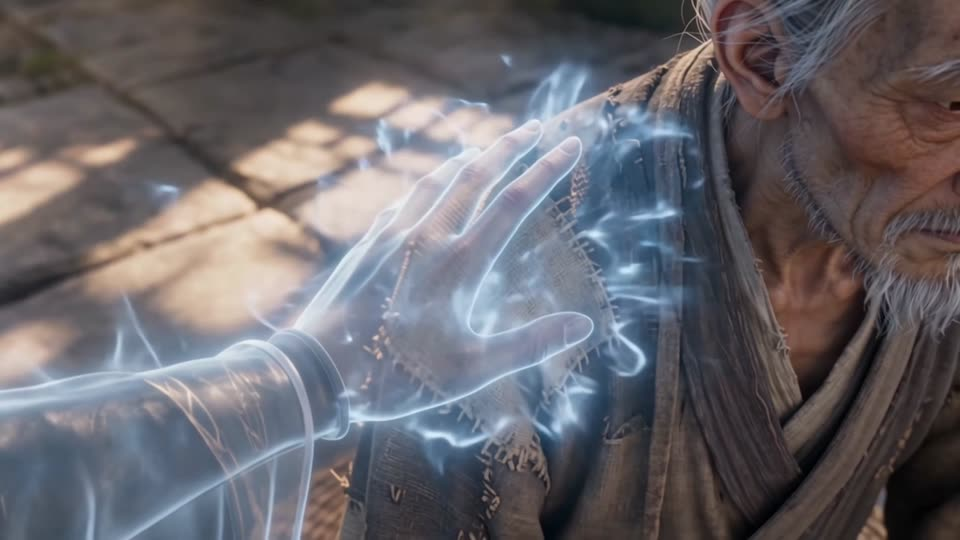
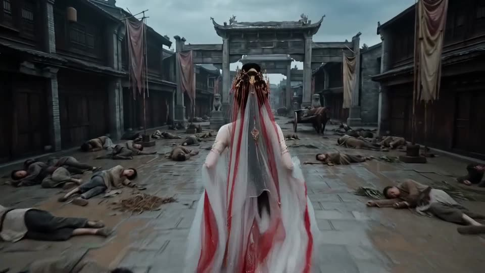
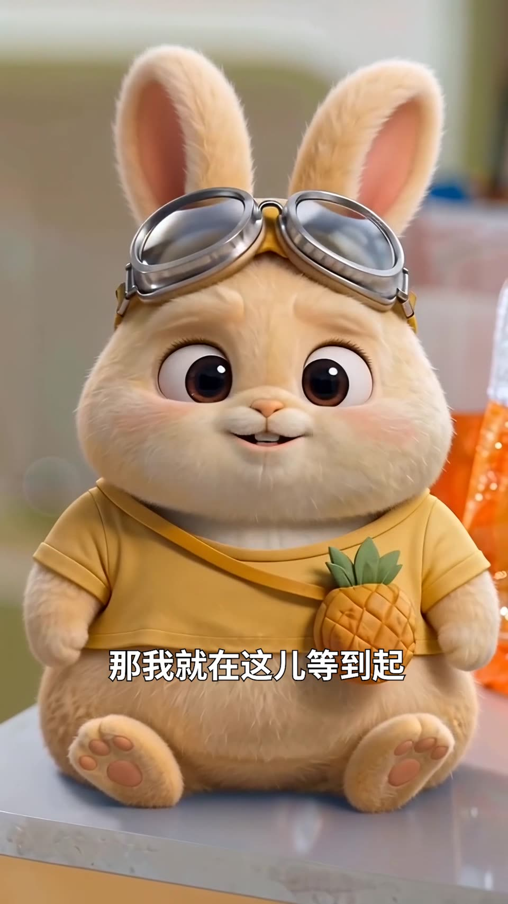
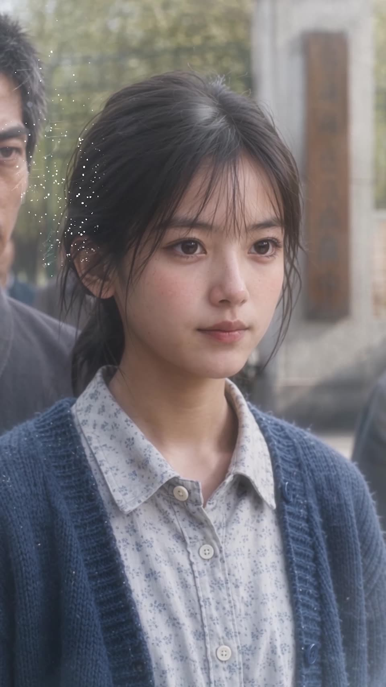
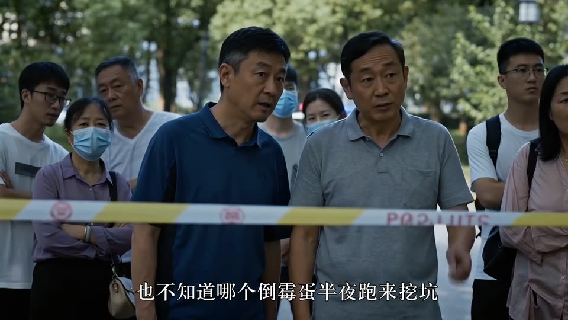

25+ 部 AI 漫剧 / 融合剧后期经验，主导建立《剪辑红线自查细则》标准化交付体系；剪辑熟练，具备生成能力，曾独立部署本地视频生成工作流。
前央视主持人白燕升团队核心摄像，帕米尔高原 7 天直播零失误，项目累计观看 2.67 亿人次，话题阅读量 5 亿。
新闻学科班出身，能力覆盖编导、拍摄、剪辑、运营全链路，可在多类型岗位间快速适配。
2020.09 — 2024.07 ｜ GPA 3.81 / 5.0
主修：电视摄像与画面编辑、微视频创作实训（新媒体方向）、广告创意与策划、新媒体文案创作、新闻摄影
校园融媒体中心副主席，统筹官方新媒体内容策划与视频产出；校园电视台干事；院学生会实验室管理部部长，熟悉常见相机机型及灯光、收音设备的调度与使用。
法治题材纪录片，聚焦基层法院特邀调解员群像

1′55″「威县土布」非遗传播宣传短片

9′07″素材获新华社等多家主流传媒平台采用

1′50″村落奇案题材，AI 生成画面 + 全流程后期

1′14″民俗灵异题材，灵体特效与氛围营造

1′46″大场面群像调度，玄幻复仇题材
太空科幻题材，机甲与 HUD 视效呈现

1′42″真人实拍 + AI 角色融合，竖屏平台向

59″乡村年代题材，竖屏短剧节奏把控

2′32″悬疑向实拍短片，叙事节奏试剪
性格开朗、乐于沟通，具备跨团队协调经验；能适应高压下多项目并行的节奏，持续学习剪辑、拍摄与 AI 应用技术。